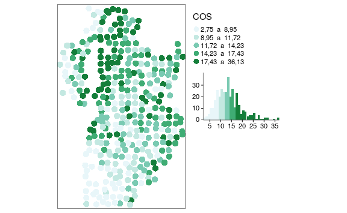
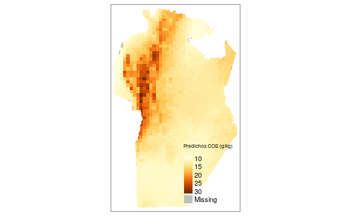
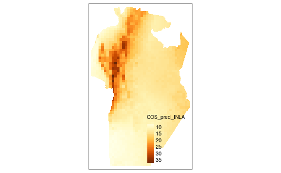
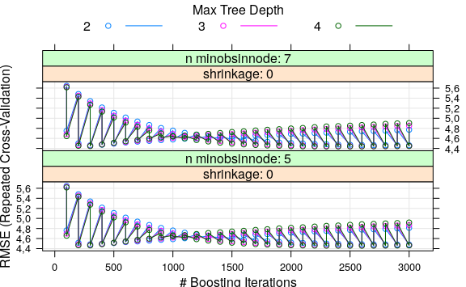
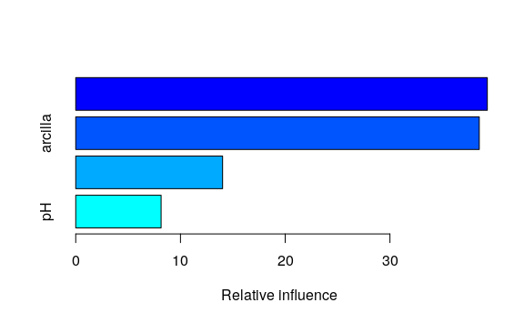
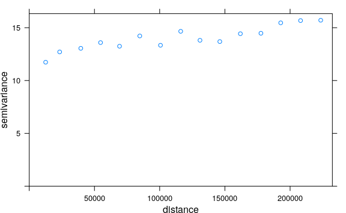
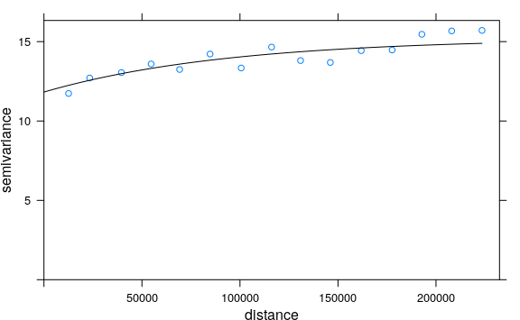
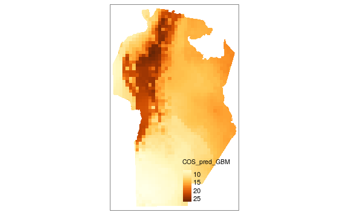

Sección 8 Predicción con múltiples capas de datos
Una vez que se ha confeccionado la grilla de predicción y se ha unificado el sistema de referencia espacial entre las distintas capas de información, se comienza con el ajuste de modelos que luego serán usados para la predicción espacial en sitios sin datos. El objeto suelos, se utilizará para el ajuste de los modelos predictivos, mientras que cetroide_pred se usará para obtener predicciones para cada celda de la grilla.
La distribución espacial de la variable de interés (COS) puede visualizarse con funciones del paquete tmap. A través del argumento palette se modifica la paleta de colores, las opciones disponibles pueden buscarse ejecutando el comando tmaptools::palette_explorer(). También se pueden adicionar otras herramientas de estadística descriptiva, como por ejemplo un histograma de frecuencia mediante el argumento legend.hist = TRUE. Los estilos de los ejes y leyendas se pueden modificar con la función tm_layout().
tm_shape(suelos_sf) +
tm_dots(
"COS",
style = "quantile",
size = 0.5,
palette = "BuGn",
legend.hist = TRUE
) +
tm_layout(
legend.format = list(text.separator = " a "),
legend.outside = TRUE,
legend.hist.width = 1
)
8.1 Regresión con errores correlacionados espacialmente vía REML
Se ajusta un modelo de regresión lineal con la función gls(), usando COS como variable dependiente y elevación, twi, arcilla y pH como variables predictoras. Primero, se ajusta suponiendo errores independientes (sin correlación espacial). Los resultados se guardan en el objeto denominado ajuste_ML. Seguidamente, se ajusta otro modelo de regresión con igual estructura para la componente sistemática, pero suponiendo que los términos de error aleatorio no son independientes sino que se correlacionan a través de un modelo de covarianza espacial. En particular, se ajusta el modelo de correlación espacial esférico y se suponen varianza residual única (modelo homcedástico). El método de estimación del modelo es REML. Los resultados se guardan en el objeto ajuste_err_corr.
ajuste_err_corr <- gls(
COS ~ 1 + elevacion + twi + arcilla + pH,
data = suelos,
correlation = corSpher(form = ~ X + Y),
method = "REML"
)Utilizando la función summary() se muestra a continuación el resultado del modelo sin correlación espacial (objeto ajuste_ML). Todos los términos del modelo, a excepción de elevacion resultaron significativos para un nivel de significación \(\alpha=0.05\). Se observó una correlación alta entre elevacion y twi (0,859), por esta colinealidad entre ambas variables, el término elevacion pudo no haber resultado significativo y podría sacarse del modelo. Se muestra también las características de la distribución de los residuos (mínimo, máximo valor y principales cuartiles). Es de esperar que los residuos estandarizados se encuentren en el intervalo [-3, 3], los valores fuera de este rango se consideran valores atípicos y podrían ser eliminados para reajustar el modelo. La varianza residual es el cuadrado de 4.58, indicando que desviaciones de 4,58 g/kg pueden existir por azar y que no se relacionan a las fuentes de variación reconocidas a priori.
summary(ajuste_ML)
#> Generalized least squares fit by REML
#> Model: COS ~ 1 + elevacion + twi + arcilla +
pH
#> Data: suelos
#> AIC BIC logLik
#> 2088 2111 -1038
#>
#> Coefficients:
#> Value Std.Error t-value p-value
#> (Intercept) 37,2 6,65 5,59 0,0000
#> elevacion 0,0 0,00 1,64 0,1016
#> twi -0,2 0,05 -4,49 0,0000
#> arcilla 0,3 0,03 10,83 0,0000
#> [ reached 'max'
/ getOption("max.print") --
omitted 1 rows ]
#>
#> Correlation:
#> (Intr) elevcn twi arcill
#> elevacion -0,767
#> twi -0,919 0,859
#> arcilla -0,047 -0,001 -0,064
#> pH -0,347 -0,163 -0,035 0,040
#>
#> Standardized residuals:
#> Min Q1 Med Q3 Max
#> -3,427 -0,596 -0,118 0,472 4,787
#>
#> Residual standard error: 4,58
#> Degrees of freedom: 350 total; 345 residualPara el modelo ajustado suponiendo errores correlacionados, los criterios de información de AIC y BIC fueron menores que los obtenidos bajo el supuesto de errores independientes, indicando la conveniencia de considerar la correlación espacial. Los parámetros del modelo asociado a la componente aleatoria son rango = 17791,35 m y varianza residual igual al cuadrado de 4,56. Estos caracterizan la matriz de varianza y covarianza de los errores y proveen una estimación del semivariograma esférico que describe el proceso espacial subyacente, i.e. observaciones separadas por más de 17791,35 m no se encuentran correlacionadas y la varianza residual de las observaciones independientes o con distancias mayor al rango, expresada como desvío estándar, es 4,56.
summary(ajuste_err_corr)
#> Generalized least squares fit by REML
#> Model: COS ~ 1 + elevacion + twi + arcilla +
pH
#> Data: suelos
#> AIC BIC logLik
#> 2078 2105 -1032
#>
#> Correlation Structure: Spherical spatial
correlation
#> Formula: ~X + Y
#> Parameter estimate(s):
#> range
#> 17791
#>
#> Coefficients:
#> Value Std.Error t-value p-value
#> (Intercept) 37,0 6,44 5,74 0,0000
#> elevacion 0,0 0,00 1,71 0,0877
#> twi -0,2 0,05 -4,41 0,0000
#> arcilla 0,3 0,03 12,49 0,0000
#> [ reached 'max'
/ getOption("max.print") --
omitted 1 rows ]
#>
#> Correlation:
#> (Intr) elevcn twi arcill
#> elevacion -0,763
#> twi -0,916 0,853
#> arcilla -0,218 0,083 0,038
#> pH -0,285 -0,224 -0,108 0,260
#>
#> Standardized residuals:
#> Min Q1 Med Q3 Max
#> -3,415 -0,578 -0,117 0,476 4,843
#>
#> Residual standard error: 4,57
#> Degrees of freedom: 350 total; 345 residualLas predicciones se realizaron utilizando la función predict() sobre los centroides de la grilla de predicción utilizando el mejor modelo entre los ajustados. Se convierte el objeto centroide_pred en un data.frame, eliminando del objeto centroide_pred la columna que contiene las características espaciales mediante la función st_drop_geometry() y extrayendo mediante la función st_coordinates(), las coordenadas sin los atributos espaciales. Estas partes se guardan en el objeto suelos_pred de clase data.frame.
suelos_pred <- data.frame(
st_drop_geometry(centroide_pred),
st_coordinates(centroide_pred))
pred_ajuste_err_corr <- predict(
ajuste_err_corr,
newdata = suelos_pred,
na.action = na.pass)Los predichos se adicionan al objeto centroide_pred utilizando la función cbind(). Para que la visualización de estos valores, se pueda realizar utilizando los polígonos de la grilla de predicción en vez de los centroides, se deben adicionar los predichos mediante la función st_join().
pred_err_corr <- cbind(
centroide_pred,
"COS_pred" = pred_ajuste_err_corr)
pred_err_corr <- st_join(
grilla_pred,
pred_err_corr)
tm_shape(pred_err_corr) +
tm_fill("COS_pred", style = "cont",
title = "Predichos COS (g/kg)")
8.2 Regresión con efectos aleatorios de sitio vía INLA
Para abordar la regresión bayesiana de datos espaciales, primero se define el predictor lineal ajustando un modelo de regresión lineal con la función inla(). INLA representa una combinación de aproximaciones analíticas y esquemas de integración numérica eficiente para obtener una aproximación confiable de la distribución a posteriori de interés. En el ejemplo de ilustración, se usa COS como variable dependiente y elevación, twi, arcilla y pH como variables predictoras y no se ha contemplado la estructura de correlación espacial. Se especifica la distribución que se asume para la variable respuesta a través del argumento family. El cómputo de las medidas para evaluación y comparación de modelos se realiza con el argumento control.compute especificando la medida que se pretende. Para explorar las opciones disponibles para la evaluación y comparación de modelos se ejecuta el comando ?control.compute (en el ejemplo, se solicita el criterio DIC).
ajuste_INLA <- inla(
COS ~ 1 + elevacion + twi + arcilla + pH,
family = 'gaussian',
data = suelos,
control.compute = list(dic = TRUE))El modelo ajustado es retornado como un objeto INLA. Este provee información sobre el tiempo de procesado y algunos estadísticos sobre las distribuciones a posteriori de los coeficientes de regresión (efectos fijos) y de los hiperparámetros. Para el modelo ajustado se observan los intervalos de credibilidad del 95% para los coeficientes de regresión asociados a cada una de las variables predictoras (predictor lineal) y como hiperparámetro la precisión de las observaciones de COS. En este ajuste, no hubo efectos aleatorios ni especificaciones relacionadas a la espacialidad de los datos. El intervalo de credibilidad contiene al verdadero parámetro con un 95% de probabilidad. Luego, el ajusta indica que todas las variables impactan a la respuesta, excepto la variable elevación para la cual el desvío estándar (sd) es alto relativo a la media de la distribución del coeficiente de regresión y el intervalo de credibilidad contiene al 0. Podría ser oportuno realizar un nuevo ajuste sin esta variable, que como se ha especificado anteriormente está altamente correlacionada con twi. La media a posteriori para el coeficiente de regresión que acompaña el pH es -0,766 con un intervalo de credibilidad del 95% entre -1,516 y -0,017, por lo que se interpreta que a mayores valores de pH se tendrán menores valores de COS. Se muestra también el intervalo de credibilidad [0,041; 0,055] para la precisión (inversa de la varianza \(1/\sigma_e^2\) ), la estimación es 0,048 y por tanto la varianza residual es próxima a 20 o el error estándar residual cercano a 4,56. El valor de DIC, el cual es una función de la deviance del modelo y de una medida del número efectivo de parámetros del modelo, es 2065,79`. El numero efectivo de parámetros es una cantidad que caracteriza la complejidad del modelo y que no solo depende de la cantidad de parámetros sino también de la dependencia entre ellos. Esta medida puede ser usada para comparar modelos, menores valores indican mejor ajuste del modelo a los datos. El mejor de los modelos ajustados, también tendrá menor diferencia entre el valor de DIC para ese modelo y el valor de DIC para el modelo saturado. La verosimilitud marginal es otro criterio usado en selección de modelos en estadística bayesiana, al reportarse en escala log menor valor indica mejor ajuste. R-INLA obtiene las distribuciones marginales a posteriori para todos los parámetros del modelo.
summary(ajuste_INLA)
#>
#> Call:
#> c("inla(formula = COS ~ 1 + elevacion + twi
+ arcilla + pH, family =
#> \"gaussian\", ", " data = suelos,
control.compute = list(dic = TRUE))")
#> Time used:
#> Pre = 0,569, Running = 0,137, Post = 0,0578,
Total = 0,763
#> Fixed effects:
#> mean sd 0.025quant 0.5quant 0.975quant mode
kld
#> (Intercept) 37,171 6,654 24,100 37,171
50,231 37,171 0
#> elevacion 0,003 0,002 -0,001 0,003 0,008
0,003 0
#> [ reached getOption("max.print") -- omitted
3 rows ]
#>
#> Model hyperparameters:
#> mean sd 0.025quant 0.5quant 0.975quant
#> Precision for the Gaussian observations
0,048 0,004 0,041 0,048 0,055
#> mode
#> Precision for the Gaussian observations
0,048
#>
#> Expected number of effective
parameters(stdev): 5,00(0,00)
#> Number of equivalent replicates : 70,00
#>
#> Deviance Information Criterion (DIC)
...............: 2065,80
#> Deviance Information Criterion (DIC,
saturated) ....: 359,50
#> Effective number of parameters
.....................: 6,08
#>
#> Marginal log-Likelihood: -1070,11
#> Posterior marginals for the linear predictor
and
#> the fitted values are computedLos efectos aleatorios en INLA se incluyen en la formula del predictor lineal usando la función f(). Para el ejemplo de ilustración, más abajo se ajusta el modelo de regresión donde se adiciona un efecto aleatorio de sitio para caracterizar el proceso espacial subyacente a los datos. Dado que la función f() se valúa sobre un red de nodos conformada a partir de las observaciones, es primero necesario construir una malla que cubra el dominio espacial y definir un objeto que contiene la identificación de los nodos con observaciones. La malla se arma con la función inla.mesh.2d() cuyos argumentos o parámetros de la malla son: cutoff define la distancia mínima entre vértices de los triángulos que conforman la malla y max.edge que refiere a la longitud máxima del lado de cada triángulo. Por defecto, la malla se construye con el método de triangulación de Delauny. Sobre esta malla se construye el objeto nodos.
sitios <- suelos[, c("X", "Y")]
malla <- inla.mesh.2d(sitios, cutoff = 200,
max.edge = 200000)
nodos <- malla$idx$locPara estimar la matriz de varianzas y covarianzas de los efectos de sitio por el método SPDE se utiliza la función inla.spde2.matern(). Un argumento a especificar es el parámetro \(\alpha\) (que varía entre 0 y 2). Por defecto es 2 para aproxima una función de correlación espacial del tipo exponencial como modelo de correlación espacial entre los efectos de sitio.
Luego de identificar los nodos sobre la malla, se ajusta el modelo de regresión con efecto aleatorio de sitio usando la función inla(). Los resultados del objeto INLA resultante incluyen las distribuciones a posteriori de los efectos latentes y de los hiperparámetros, así como estadísticos de resumen. Como se ejemplifica adelante, pueden obtenerse estimaciones a posteriori de parámetros del campo espacial latente.
ajuste_INLAspde <- inla(
COS ~ 1 + elevacion + twi + arcilla + pH +
f(nodos, model = spde, diagonal = 1e-6),
family = 'gaussian',
data = suelos,
control.compute = list(dic = TRUE),
control.predictor = list(compute = TRUE))
summary(ajuste_INLAspde)
#>
#> Call:
#> c("inla(formula = COS ~ 1 + elevacion + twi
+ arcilla + pH + f(nodos, ", "
#> model = spde, diagonal = 1e-06), family =
\"gaussian\", data = suelos, ", "
#> control.compute = list(dic = TRUE),
control.predictor = list(compute =
#> TRUE))" )
#> Time used:
#> Pre = 0,642, Running = 1,98, Post = 0,0806,
Total = 2,7
#> Fixed effects:
#> mean sd 0.025quant 0.5quant 0.975quant mode
kld
#> (Intercept) 47,928 7,207 33,782 47,923
62,089 47,913 0
#> elevacion 0,004 0,003 -0,001 0,004 0,009
0,004 0
#> [ reached getOption("max.print") -- omitted
3 rows ]
#>
#> Random effects:
#> Name Model
#> nodos SPDE2 model
#>
#> Model hyperparameters:
#> mean sd 0.025quant 0.5quant 0.975quant
#> Precision for the Gaussian observations
0,069 0,007 0,057 0,069 0,083
#> Theta1 for nodos 8,579 0,154 8,291 8,574
8,895
#> mode
#> Precision for the Gaussian observations
0,069
#> Theta1 for nodos 8,554
#> [ reached 'max'
/ getOption("max.print") --
omitted 1 rows ]
#>
#> Expected number of effective
parameters(stdev): 52,76(9,84)
#> Number of equivalent replicates : 6,63
#>
#> Deviance Information Criterion (DIC)
...............: 1988,52
#> Deviance Information Criterion (DIC,
saturated) ....: 412,04
#> Effective number of parameters
.....................: 54,42
#>
#> Marginal log-Likelihood: -1049,41
#> Posterior marginals for the linear predictor
and
#> the fitted values are computedEl objeto resultante provee información sobre los intervalos de credibilidad del 95% de los coeficientes de regresión y de los hiperparámetros. Estos son además de la precisión Theta1 y Theta2 que definen la función de correlación espacial subyacente. Los parámetros Theta1 y Theta2 no son de interpretación directa, pero dependen de los parámetros que caracterizan el proceso espacial (rango y varianza estructural). Utilizando la función inla.spde2.result() se puede obtener la distribución a posteriori de los parámetros expresadas en términos de rango y varianza estructural.
resultados_spde <-
inla.spde2.result(inla = ajuste_INLAspde,
name = "nodos", spde = spde)
inla.emarginal(function(x)
x,
resultados_spde$marginals.range.nominal[[1]]
)
#> [1] 175820
inla.emarginal(function(x)
x,
resultados_spde$marginals.variance.nominal[[1]])
#> [1] 9,45Para comparar los modelos de regresión ajustados con errores independientes y con correlación espacial se visualizan medidas de bondad de ajuste como DIC para ambos modelos.
Comparando los valores de DIC se deduce la conveniencia de usar un modelo con correlación espacial respecto a uno que supone los valores de COS independientes.
En R-INLA no existe una funcion predict() como en gls. Las predicciones deben ser obtenidas como parte del modelo ajustado. Dado que las predicciones puedes ser entendida como el ajuste de un modelo con datos faltante simplemente se especificará, antes del ajuste, y[i] = NA para aquellos sitios donde se desea predecir. Las distribuciones de los valores predichos no son devueltas directamente, pero se pueden explorar. INLA retorna las a posteriori marginales para los efectos aleatorios y para el predictor linear en el sitio faltante. Adicionando el ruido de las observaciones a los valores ajustados se obtienen los valores predichos para el sitio. Para implementar este proceso en R, primero se debe generar un data.frame juntando los datos observados y la grilla de predicción. La función bind_rows() del paquete dplyr permite juntar dos data frames que contengan el mismo nombre de columnas colocando NA cuando no hay valor para un campo.
suelos_pred_INLA <- dplyr::bind_rows(suelos_pred,
suelos)
head(suelos_pred_INLA)
#> UNION JURISDICCI CAPITAL FUENTE elevacion
twi pH arcilla X Y ID_2
#> 1 -2,15e+09 CORDOBA CORDOBA IGN 275 118 6,39
8,21 310499 6129968 NA
#> COS
#> 1 NA
#> [ reached 'max'
/ getOption("max.print") --
omitted 5 rows ]Luego de identificar el predictor lineal, debe definirse la malla y el modelo espacial para la grilla de predicción asociada a los efectos aleatorios de sitios. Mediante el argumento control.predictor en la función inla() se indica que debe computarse el valor de la variable respuesta en el lugar del dato faltante.
sitios_pred <- suelos_pred_INLA[, c("X", "Y")]
nodos_pred <- malla_pred$idx$loc
spde_pred <-
inla.spde2.matern(mesh = malla_pred, alpha = 2)
pred_INLAspde <-
inla(
COS ~ -1 + elevacion + twi + arcilla + pH +
f(nodos_pred, model = spde_pred, diagonal = 1e-6),
family = 'gaussian',
data = suelos_pred_INLA,
control.predictor = list(link = 1, compute = TRUE)
)Se puede obtener la media de la distribución a posteriori de los valores predichos para cada sitio en la grilla de predicción, para mapear la distribución espacial de la variable respuesta.
pred_err_corr <-
cbind(pred_err_corr,
"COS_pred_INLA" =
pred_INLAspde$summary.fitted.values$mean
[is.na(suelos_pred_INLA$COS)])
tm_shape(pred_err_corr) +
tm_fill("COS_pred_INLA", style = "cont")
8.3 Regresión vía modelos basados en árbol
Se ajusta un modelo GBR o gradient boosting model con errores correlacionados espacialmente en dos pasos, primero se optimiza la parametrización del predictor GBR usando datos de los sitios observados y se obtienen los residuos de este modelo. En segunda instancia, se ajusta un modelo de semivariaograma a los residuos que se usará para realizar predicción kriging de residuos sobre toda la grilla de predicción. Finalmente, los residuos predichos se adicional a la componente sistemática predicha con el modelo GBR sobre la misma grilla de predicción.
Para implementar GBR se utiliza el paquete caret. Para optimizar el modelo GBM. se genera una grilla de valores posibles para sus parámetros con la función expand.grid(). Esta función genera un data.frame que contiene en las filas cada una de las combinaciones posibles generadas a partir de los rangos de valores propuestos para cada parámetro del modelo GBM. Éstos son: n.trees que definen el número total de árboles ajustados, shrinkage que regula la extensión de cada árbol, n.minobsinnode que representa el mínimo de observaciones en cada nodo terminal y bag.fraction la proporción de observaciones del grupo de entrenamiento seleccionadas aleatoriamente para la expansión sucesiva del árbol. El tipo de validación cruzada para la optimización de los parámetros del modelo se realiza a través de la función train.control. Luego utilizando la función train() se especifica el modelo con el argumento method, en este caso gbm. La misma función train() genera un objeto con el modelo parametrizado con la configuración valores que arrojan el menor error predictivo, es decir con un modelo del tipo árbol optimizado.
param_gbm <- expand.grid(
interaction.depth = c(2:4),
n.trees = (1:30) * 100,
shrinkage = c(0.001, 0.01),
n.minobsinnode = c(7, 5)
)
control <- trainControl(method = "repeatedcv",
number = 5,
repeats = 5)
ajuste_gbm <- train(
COS ~ elevacion + twi + arcilla + pH,
data = suelos,
method = "gbm",
trControl = control,
verbose = FALSE,
metric = "RMSE",
tuneGrid = param_gbm
)Pidiendo un gráfico del objeto ajuste_gbm se puede acceder al resumen del proceso de optimización de los parámetros. El rendimiento del modelo depende de estos parámetros, pero es posible identificar las combinaciones que generan el mejor desempeño predictivo. A su vez, a través del comando ajuste_gbm$bestTune podemos acceder a los parámetros que definen el modelo óptimo.
```r
plot(ajuste_gbm) ajuste_gbm$bestTune #> n.trees interaction.depth shrinkage n.minobsinnode #> 173 2300 4 0,001 7 ```
El objeto resultante del ajuste GBM, provee un gráfico de la influencia relativa de cada variable predictora para explicar COS, y el árbol con el que se realizará la predicción. A partir de la función predict() sobre los datos observados, se obtienen predichos y consecuentemente los residuos del modelo GBR.
```r
summary(ajuste_gbm) #> var rel.inf #> twi twi 39,30 #> arcilla arcilla 38,53 #> elevacion elevacion 14,02 #> pH pH 8,15 ```
En la segunda etapa, se ajusta una función de semivarianza a los residuos del modelo GBM utilizando las funciones variogram y fit.variogram del paquete gstat.
suelos$residuosgbm <-
suelos$COS - predict(ajuste_gbm,
newdata = suelos)
coordinates(suelos) <- c("X", "Y")
crs(suelos) <- CRS("+init=epsg:32720")
semiv_gbmk <- variogram(residuosgbm ~ 1, suelos)
plot(semiv_gbmk)
semiv_aj_gbmk <-
fit.variogram(semiv_gbmk ,
vgm(c("Exp", "Sph", "Gau")))
plot(semiv_gbmk , semiv_aj_gbmk)
coordinates(suelos_pred) <- c("X", "Y")
crs(suelos_pred) <- CRS("+init=epsg:32720")
Para obtener un predicción de COS en los sitios no muestreados, se realiza la predicción kriging de los residuos sobre los sitios de la grilla de predicción utilizando el modelo ajustado en el paso anterior a partir de la función krige(). Luego se utiliza el modelo GBM (árbol optimo) para predecir COS sobre la grilla de predicción sin considerar la espacialidad. Finalmente, la predicción de COS en cada sitio se compone sumando la predicción del modelo GBM y la predicción kriging de los residuos para cada sitio de la grilla de predicción.
krig_res_gbm <-
krige(
residuosgbm ~ 1,
location = suelos,
newdata = suelos_pred,
model = semiv_aj_gbmk
)
#> [using ordinary kriging]
gbmk_pred <-
predict(ajuste_gbm,
newdata = suelos_pred,
na.action = na.pass) +
krig_res_gbm$var1.pred
pred_err_corr <-
cbind(pred_err_corr,
"COS_pred_GBM" = gbmk_pred)
tm_shape(pred_err_corr) +
tm_fill("COS_pred_GBM", style = "cont")